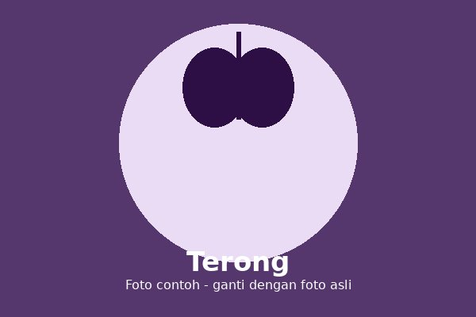

Terong adalah tanaman sayuran yang buahnya berbentuk lonjong berwarna ungu. Buah ini sering diolah menjadi berbagai masakan sehari-hari.
Eggplant is a vegetable plant with an oval, purple-colored fruit. It is commonly cooked into a variety of everyday dishes.
Tumbuh baik di dataran rendah hingga menengah dengan tanah yang subur dan gembur.
Grows well in lowland to medium-elevation areas with fertile, loose soil.